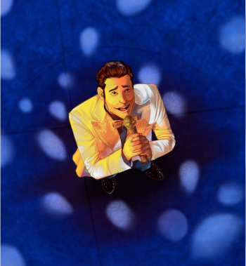
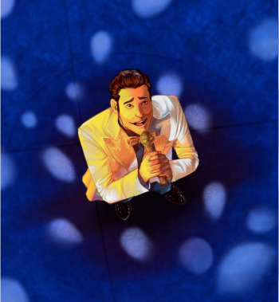

Illustration

Pencil drawing - A4
Pencil portrait of Benedict Cumberbatch as Sherlock Holmes.
Pencil drawing - A3
Commision for a couple to celebrate their wedding anniversary.

Shoe Study
Study of a shoe that includes multiple techniques and media. This includes chalk, charcoal, marker, pencil and anamorphosis.

Shoe Study
Study of a shoe that includes multiple techniques and media. This includes chalk, charcoal, marker, pencil and anamorphosis.
 
